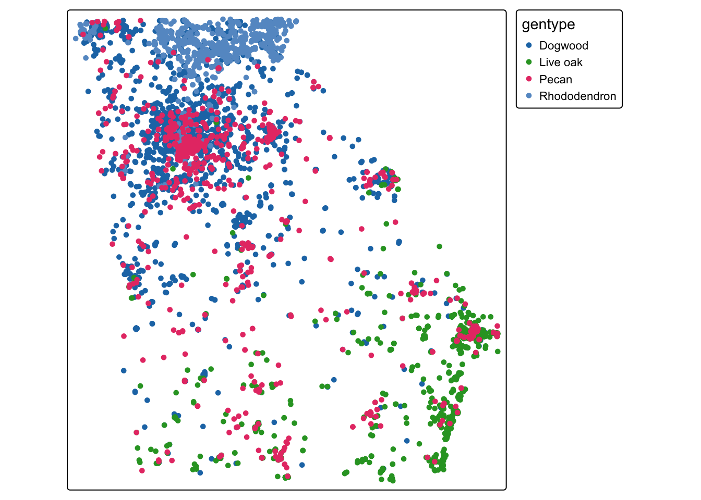
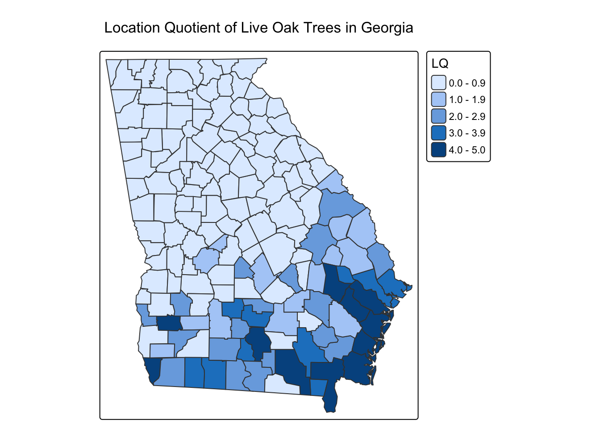

In this lab, you’ll work with point, polygon, and raster data to investigate the distribution and environmental characteristics of trees in Georgia.
You’ll begin with observations of two tree species collected through the iNaturalist citizen-science platform. First, you’ll use these observations to calculate the number of trees of each species found in Georgia’s counties. You’ll then use these counts to calculate a location quotient (LQ), a measure that compares the prevalence of a species in each county with its prevalence across the state as a whole.
In the second part of the lab, you’ll use temperature data from the ERA5 climate reanalysis to investigate the temperatures associated with observations of the two tree species. You’ll extract temperature values from a raster for each tree observation and then calculate descriptive statistics for each species.
For this lab to be marked complete, the following criteria must be met:
Your responses should show your ability to load and manipulate point and polygon vector data. (Tasks 1–3)
Your responses should show your ability to calculate counts and create new variables from spatial data. (Tasks 2–4)
Your responses should show your understanding of the location quotient as a measure of spatial concentration. (Tasks 4–5)
Your responses should show your ability to load raster data and extract raster values at point locations. (Tasks 6–8)
Your responses should show your ability to manipulate data frames and calculate summary statistics. (Tasks 9–10)
Your responses should demonstrate your ability to describe statistical and spatial patterns in geographic data.
Before you get started, you’ll need to load the following packages: tidyverse, terra, sf, and tmap. You may also want to use knitr for displaying tables.
# Load packages here.library(tidyverse)
── Attaching core tidyverse packages ──────────────────────── tidyverse 2.0.0 ──
✔ dplyr 1.2.1 ✔ readr 2.2.0
✔ forcats 1.0.1 ✔ stringr 1.6.0
✔ ggplot2 4.0.3 ✔ tibble 3.3.1
✔ lubridate 1.9.5 ✔ tidyr 1.3.2
✔ purrr 1.2.2
── Conflicts ────────────────────────────────────────── tidyverse_conflicts() ──
✖ dplyr::filter() masks stats::filter()
✖ dplyr::lag() masks stats::lag()
ℹ Use the conflicted package (<http://conflicted.r-lib.org/>) to force all conflicts to become errors
library(knitr)library(terra)
terra 1.9.50
Attaching package: 'terra'
The following object is masked from 'package:knitr':
spin
The following object is masked from 'package:tidyr':
extract
library(tmap)
Registered S3 method overwritten by 'stars':
method from
st_interpolate_aw.stars sf
library(sf)
Linking to GEOS 3.13.0, GDAL 3.8.5, PROJ 9.5.1; sf_use_s2() is TRUE
Part 1: Mapping the distribution of trees
Where are these tree species most prevalent in Georgia?
In this part of the lab, you’ll use iNaturalist observations of two tree species to investigate their geographic distribution.
The data folder contains a file named gatree_obs_inat.csv. This file contains observations of live oaks, pecan trees, flowering dogwoods, and great rhododendrons in Georgia.
Your first task is to load these observations and convert them into a spatial point dataset. The observations contain longitude and latitude coordinates that you can use to create the point locations.
Task 1
Load the iNaturalist observations and convert them to an sf point dataset using the longitude and latitude fields. Map the observations using tmap, with the point colors based on the gentype field.
trees2 <-read_csv("data/gatree_obs_inat.csv")
Rows: 6322 Columns: 19
── Column specification ────────────────────────────────────────────────────────
Delimiter: ","
chr (13): uuid, observed_on_string, time_observed_at, time_zone, user_login...
dbl (5): id, user_id, taxon_id, longitude, latitude
date (1): observed_on
ℹ Use `spec()` to retrieve the full column specification for this data.
ℹ Specify the column types or set `show_col_types = FALSE` to quiet this message.
trees <- trees2 %>%st_as_sf(coords=c("longitude","latitude"),crs=4326)tm_shape(trees)+tm_dots("gentype",size=0.3)

Now that you have mapped the observations, you’ll use the Georgia county boundaries to determine how many observations of each species occur within each county.
Load the county data from:
ACSCtyData_2022ACS_simplify.gpkg
You’ll then use a spatial join to determine which county contains each tree observation.
Task 2
Load the Georgia county dataset and use a spatial join to assign each tree observation to a county. Create a table showing the number of observations of each species in each county.
`summarise()` has regrouped the output.
ℹ Summaries were computed grouped by gentype and cty_name.
ℹ Output is grouped by gentype.
ℹ Use `summarise(.groups = "drop_last")` to silence this message.
ℹ Use `summarise(.by = c(gentype, cty_name))` for per-operation grouping
(`?dplyr::dplyr_by`) instead.
kable(head(types_per_cty))
cty_name
Dogwood
Live oak
Pecan
Rhododendron
Appling County, Georgia
2
4
1
0
Baker County, Georgia
7
10
0
0
Baldwin County, Georgia
5
3
9
0
Banks County, Georgia
6
0
0
1
Barrow County, Georgia
39
0
5
0
Bartow County, Georgia
40
0
3
0
You should now have a dataset showing the number of observations of each species in each county.
For example, your table might have a structure similar to:
County
Live oak
Great rhododendron
Clarke
25
8
Oconee
17
12
…
…
…
Your next step is to calculate the total number of tree observations in each county.
Task 3
Create a county-level dataset containing the number of observations of each species and the total number of tree observations.
You will now use these counts to calculate a location quotient (LQ). For this lab, we’ll use it to ask:
Is a particular tree species more prevalent among tree observations in a county than it is across Georgia as a whole?
For this lab, calculate an LQ for live oak observations.
First, calculate the statewide proportion of observations that are live oak. Then calculate the proportion of observations that are live oak in each county. Finally, divide the county proportion by the statewide proportion.
Task 4
Calculate the location quotient for live oak observations for every Georgia county. Add the resulting LQ as a new variable in your county dataset.
# total trees totaltrees =nrow(countiesntrees)liveoak =sum(obs_per_cty$`Live oak`, na.rm=TRUE) #This was where i asked chatgpt i could NOT figure out the backticks lostateratio = liveoak/totaltrees #ratio of oaks overallcty_lq2 <- counties %>%filter(st_name=="Georgia") %>%#don't want everybody left_join(obs_per_cty, by='cty_name') %>%#put in the obsmutate(oak_ratio =`Live oak`/totalct, oak_lq = oak_ratio/lostateratio) %>%mutate(oak_lq =replace_na(oak_lq, 0)) #This is how i dealt with the NaNs
Now map your LQ values.
Task 5
Create a map showing the location quotient for live oak observations. Describe the geographic pattern you see. Which parts of Georgia have relatively high concentrations of live oak observations? Which have relatively low concentrations?
tm_shape(cty_lq2)+tm_polygons(fill="oak_lq",fill.legend =tm_legend(title="LQ"))+tm_title("Location Quotient of Live Oak Trees in Georgia")
[plot mode] fit legend/component: Some legend items or map compoments do not
fit well, and are therefore rescaled.
ℹ Set the tmap option `component.autoscale = FALSE` to disable rescaling.

Your response:
There’s a much higher percentage of oaks in the south/southeast part of the state than there is in the whole state. It looks like they enjoy the coast. There is a LQ of less than 1 indicating a lower percentage of oaks in most of the central and northern areas. No abnormally high oak totals north of the fall line.
Part 2: Trees and temperature in Georgia
What temperatures are associated with observations of each species?
In the second part of the lab, you’ll investigate the environmental characteristics of the four tree species.
The temperature data you’ll use come from the ERA5 climate reanalysis. The data provide retrospective information about atmospheric conditions across the globe.
You will use the July temperature rasters from 2022–2024 to calculate a mean July temperature raster. You’ll then extract the temperature associated with each tree observation.
Your first step is to load one of the temperature rasters—the one for July 1, 2024—and convert the temperature from degrees Kelvin to degrees Celsius.
You should see this raster in the data folder of this lab repository. Load it using the rast function from terra.
Task 6
Load the July 1, 2024 temperature raster and convert it from Kelvin to Celsius. Plot it when you are done.
Now load all of the temperature rasters for July 2022–2024.
Create a list of the files in the temp_july2022_2024 folder and load them using rast. Convert the values from Kelvin to Celsius.
Use nlyr() to confirm how many raster layers you have loaded.
Task 7
Load all temperature rasters for July dates in 2022–2024, convert them from Kelvin to Celsius, and calculate the mean temperature across all of the raster layers.
You now have a raster representing the mean July temperature across the study period.
Next, use terra::extract() to obtain the temperature value at the location of every tree observation.
Task 8
Extract the mean July temperature for each tree observation and add the temperature value to the tree dataset. Display the first several observations using kable().
#mean july temp for all the years, not that specific year, right?treesinjuly <- terra::extract(julies, countiesntrees, method="bilinear")countiesntrees$temperature <- treesinjuly[,2]meantemptable <- countiesntrees %>%st_drop_geometry() %>%select(id, observed_on, cty_name, gentype, temperature) kable(head(meantemptable))
id
observed_on
cty_name
gentype
temperature
38491
2011-11-07
Clarke County, Georgia
Dogwood
26.65019
145616
2012-11-09
Fulton County, Georgia
Dogwood
26.26979
399515
2013-09-10
Hall County, Georgia
Dogwood
25.78132
618291
2014-04-07
Coweta County, Georgia
Dogwood
26.40977
710549
2013-10-13
Cobb County, Georgia
Dogwood
26.37995
751374
2014-04-06
Washington County, Georgia
Dogwood
28.14945
You can now calculate summary statistics for the two tree species.
For each species, calculate:
the mean temperature
the standard deviation of temperature
the mean longitude
the mean latitude
The mean longitude and latitude provide a simple measure of the mean center of the observations.
Task 9
Calculate the mean and standard deviation of temperature for each species, along with the mean longitude and latitude of their observations. Display the results using kable().
treestats <- countiesntrees %>%mutate(lon=st_coordinates(geometry)[,1], lat =st_coordinates(geometry)[,2]) %>%#pulls back the lat/lon from the original data. probably a way to do this easier but it works for me lol select(lat, lon, cty_name, gentype, temperature) %>%group_by(gentype) %>%summarise(meantemp =mean(temperature, na.rm=TRUE), sdtemp =sd(temperature, na.rm=TRUE), meanlat =mean(lat), meanlon =mean(lon)) %>%st_drop_geometry()#question here - theres 177 missing live oak temps and 5 missing pecan temps, what is the best way to go about that? na.rm for the pecan because its <1%, but oak is 13%. those obs are included in the lat/lon means but not the temp means kable(head(treestats))
gentype
meantemp
sdtemp
meanlat
meanlon
Dogwood
26.26618
0.8661423
33.80864
-84.16315
Live oak
27.88078
0.2285202
31.63942
-81.73694
Pecan
26.78590
0.7075050
33.23651
-83.70759
Rhododendron
24.35830
1.0574245
34.66185
-83.98485
Task 10
What does the table tell you about the temperatures associated with observations of the two species? How do their geographic distributions compare? Are there any similarities or differences that you find interesting?
Oaks like the warmest temperatures! They also have the lowest latitude and easternmost longitude, which matches the location quotient pattern that we mapped earlier showing the high concentration of oaks near the coast. Rhododendrons like the coolest temperatures, but also have the highest variation with a stdev over 1 degree. The cool temps match up with a much higher mean latitude than the other trees. Dogwoods and pecans performed similarly.
Lab challenge
The data folder also includes temperature data for the 1950–1952 period.
As a challenge, repeat the temperature analysis using the 1950–52 data. Calculate the mean temperature associated with each tree observation for both periods and compare the results. Then calculate the difference between the two periods for each observation. Map the resulting CHANGE variable and describe the geographic pattern you see.
Challenge:Which areas of Georgia show the largest changes in the temperatures associated with tree observations? Which trees are in areas with the greatest changes in temperature in this period?
treestats2 <- countiesntrees2 %>%mutate(lon=st_coordinates(geometry)[,1], lat =st_coordinates(geometry)[,2]) %>%#pulls back the lat/lon from the original data. probably a way to do this easier but it works for me lol select(lat, lon, cty_name, gentype, temperature) %>%group_by(gentype) %>%summarise(meantemp =mean(temperature, na.rm=TRUE), sdtemp =sd(temperature, na.rm=TRUE), meanlat =mean(lat), meanlon =mean(lon)) treestats_change <- treestats %>%st_drop_geometry() %>%left_join(treestats2, by="gentype", suffix =c(".now", ".past")) %>%mutate(deltat = meantemp.now - meantemp.past)#head(treestats_change)
Spatial: Less temperature change in the general Atlanta area, extending down to the southwest. Larger temperature changes are found in the far north and coastal plain.
Gentype: Rhododendrons and live oaks had the highest magnitude of change, around 0.73-0.74 degrees higher than 1850. This makes sense, as the oaks were all down by the coast and the rhododendrons were all up north! # Final submission
Disclosure of assistance
Besides class materials, what other sources of assistance did you use while completing this lab? These can include input from classmates, relevant material identified through web searches (e.g., Stack Overflow), or assistance from ChatGPT or other AI tools. How did these sources support your own learning in completing the lab?
I used the ?function and ChatGPT for a couple things I got caught up on. What keeps getting me is the geometry stuff, I asked chatgpt how to bring back the lat/lon for task 9 and it gave me that line that indexes the geometry column. Works, but my immediate thought is that there’s a better/more efficient way to do that. It helped with showing me how to manage the column name having a space in it (backticks, who knew)
Lab reflection
How do you feel about the work you did on this lab? Was it easy, moderate, or hard? What are the biggest things you learned by completing it?
This one was harder! Joining datasets of different types together and managing them (especially when it’s the spatraster so you can’t click on the dataframe) is difficult to visualize. Learning to match climate data with land observations spatially and then perform statistical magic on them was incredibly helpful for my own research.